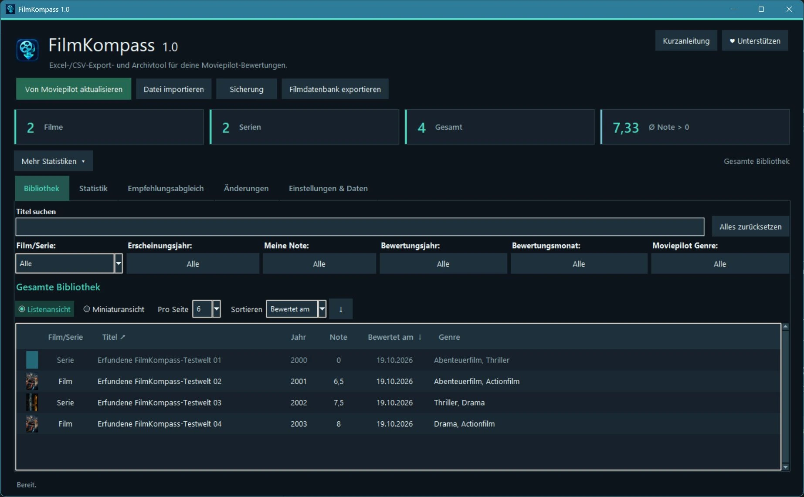
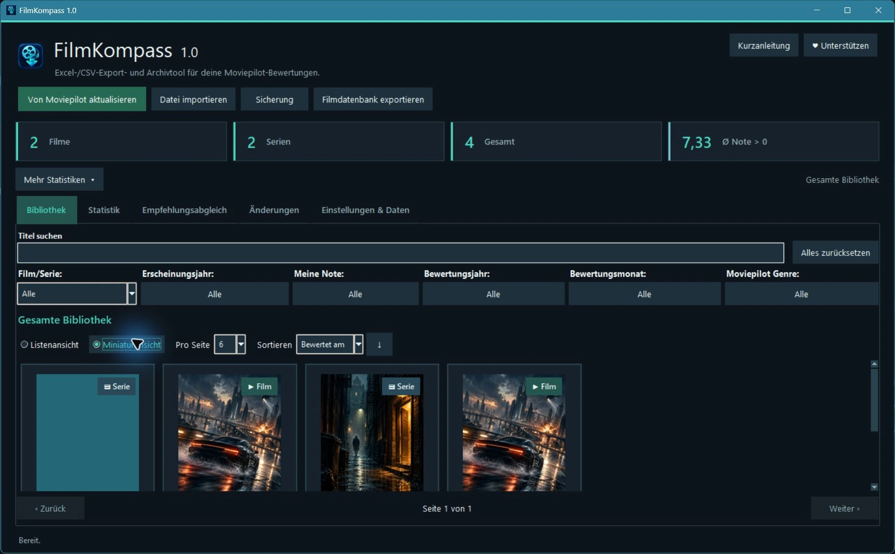
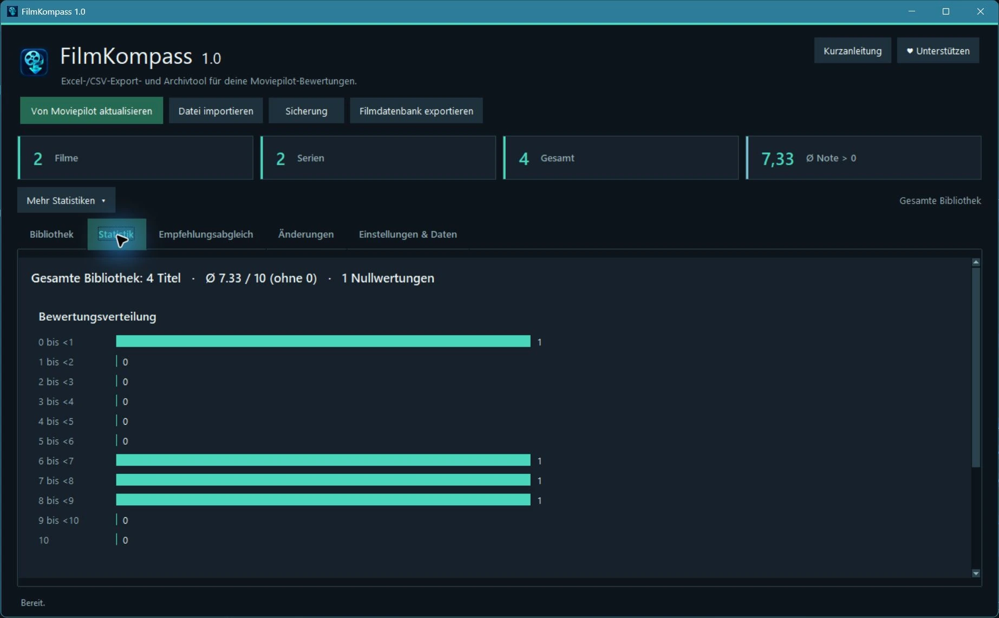
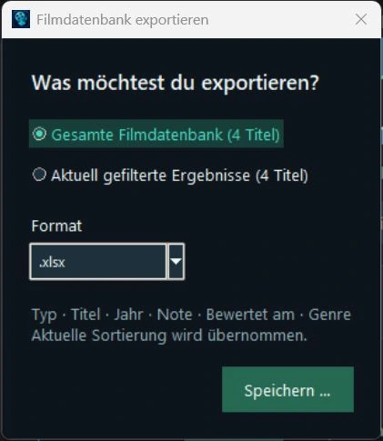
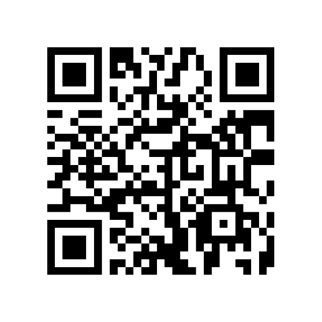
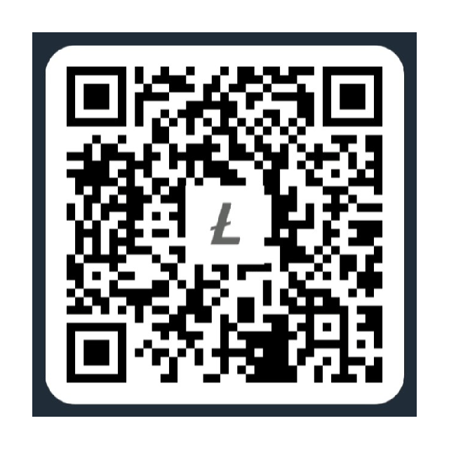
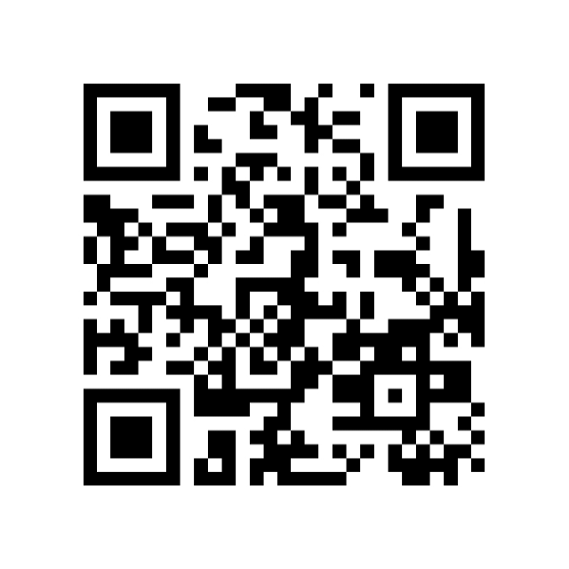

Bewertungen herunterladen
Übernimm deine öffentlich sichtbaren Moviepilot-Bewertungen in deine eigene Filmbibliothek.
DEINE SAMMLUNG. LOKAL BEI DIR.
Deine Moviepilot-Bewertungen an einem Ort.
FilmKompass ist ein kostenloses Windows-Programm, mit dem du deine Moviepilot-Bewertungen herunterladen, durchsuchen und sichern kannst.
Filtere deine Filme und Serien, entdecke deinen Filmgeschmack und exportiere deine Sammlung bequem nach Excel oder CSV.
Kostenlos · Open Source
Windows 11 (64-Bit) getestet · Portables ZIP · ca. 25,4 MB · Kein Python erforderlich
Windows 10 (64-Bit): technisch plausibel, noch nicht praktisch getestet. Systemdetails

WENIGER SUCHEN. MEHR ENTDECKEN.
Übernimm deine öffentlich sichtbaren Moviepilot-Bewertungen in deine eigene Filmbibliothek.
Suche nach Titeln oder filtere deine Sammlung nach Jahr, Genre, Bewertung und Datum.
Entdecke interessante Zahlen und Statistiken rund um deine Bewertungen.
Speichere deine komplette Bibliothek oder nur die gewünschten Ergebnisse.
Wechsle zwischen Listenansicht und Miniaturansicht mit Genreillustrationen oder eigenen Bildern.
Speichere deine Sammlung lokal und erstelle bei Bedarf eine Datensicherung.
EIN BLICK INS PROGRAMM
Alle Aufnahmen mit erfundenen Beispieldaten.
Zum Vergrößern anklicken.



DEINE BEWERTUNGEN, NUR EIN PAAR KLICKS ENTFERNT
Lade FilmKompass kostenlos für Windows herunter.
Entpacke die ZIP-Datei vollständig und öffne FilmKompass.exe.
Gib deinen Moviepilot-Profilnamen ein und lade deine öffentlich sichtbaren Bewertungen herunter.
Durchsuche deine Bibliothek, filtere deine Bewertungen oder exportiere sie als Datei.
Keine separate Python-Installation nötig. Der zugehörige _internal-Ordner muss erhalten bleiben. Die EXE ist derzeit nicht digital signiert; Windows kann deshalb warnen. Nutze die offizielle Bezugsquelle und prüfe die Prüfsummen. Windows-Sicherheitsfunktionen bleiben eingeschaltet.
DEINE SAMMLUNG GEHÖRT DIR
FilmKompass speichert deine Bibliothek lokal auf deinem Computer. Es gibt keine automatische Cloud-Synchronisation und keine automatische Weitergabe deiner Filmdaten an KI-Dienste.
Du entscheidest selbst, welche Informationen du exportierst oder weitergibst.
Für den Moviepilot-Download müssen die Bewertungen öffentlich sichtbar sein. Danach kannst du sie wieder privat stellen. Während der Freigabe können auch andere sie sehen.
Datenschutz und Datensicherung ↗GUT ZU WISSEN
Ja. FilmKompass unterstützt Excel-Dateien im XLSX-Format und CSV-Dateien.
Nein. Für öffentlich sichtbare Bewertungen ist keine Anmeldung erforderlich.
Ja. Du kannst deine Bibliothek filtern und anschließend die gewünschten Ergebnisse exportieren.
Ja. Das Programm ist kostenlos und unter der MIT-Lizenz als Open Source veröffentlicht.
DEIN NÄCHSTER FILMABEND BEGINNT MIT ÜBERBLICK
Hol dir deine Moviepilot-Bewertungen auf deinen PC und entdecke deine Filmsammlung neu.
↓ FilmKompass 1.0 kostenlos herunterladenFilmKompass ist kostenlos und wird unabhängig entwickelt.
Wenn dir das Programm gefällt und du die Weiterentwicklung freiwillig unterstützen möchtest, freue ich mich über eine kleine Unterstützung.
Vielen Dank! ❤️
Die Unterstützung ist vollkommen freiwillig. Alle Funktionen bleiben kostenlos.
Bitte das passende Netzwerk wählen: Litecoin Mainnet und Litecoin BEP20 sind unterschiedliche Zahlungswege. Für Litecoin BEP20 und USDC BEP20 wird dieselbe Empfangsadresse auf der BNB Smart Chain verwendet. Binance Pay ist ein App-Zahlungslink, kein Blockchain-Netzwerk.
PayPal · Zahlungslink
Der originale QR-Link kann im Desktop-Browser auf eine allgemeine PayPal-Seite weiterleiten. Eine Zahlungsannahme wurde nicht getestet.
Bitcoin Mainnet (Native SegWit)

Litecoin Mainnet

BNB Smart Chain (BEP20)

BNB Smart Chain (BEP20)

Binance Pay · App-Zahlungslink (kein Blockchain-Netzwerk)
Zahlungsanbieter werden erst beim Öffnen eines Links oder beim Scannen in deiner App kontaktiert. Bitte Zahlungsziel, Währung und Netzwerk vor einer Zahlung selbst prüfen. Hinweise zum Website-Datenschutz